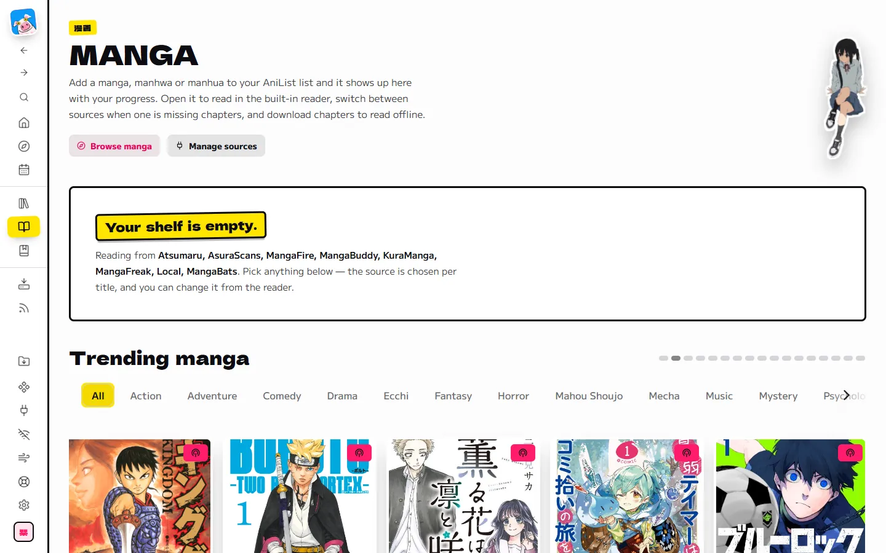
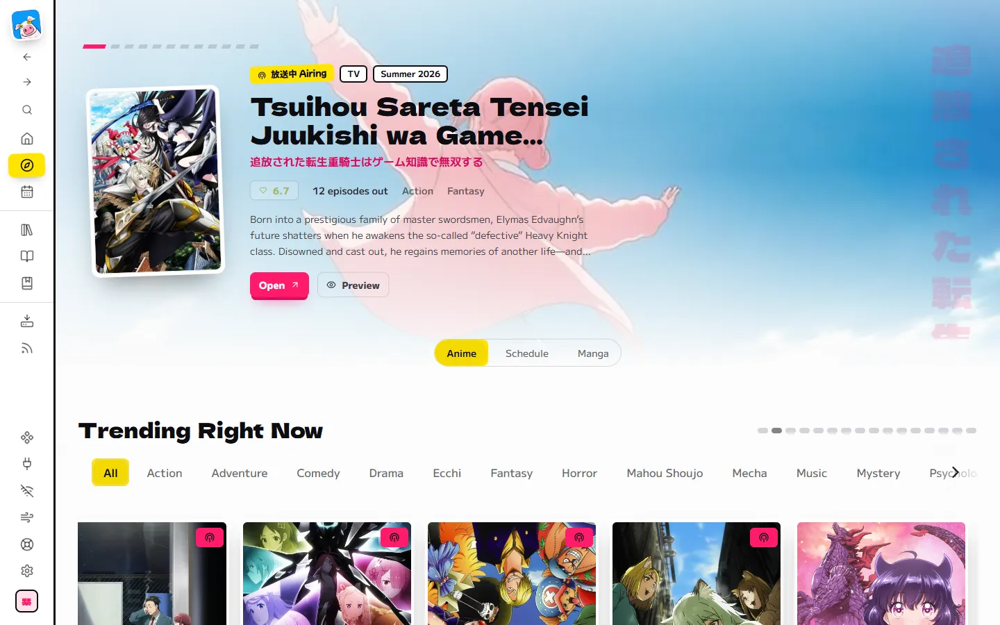
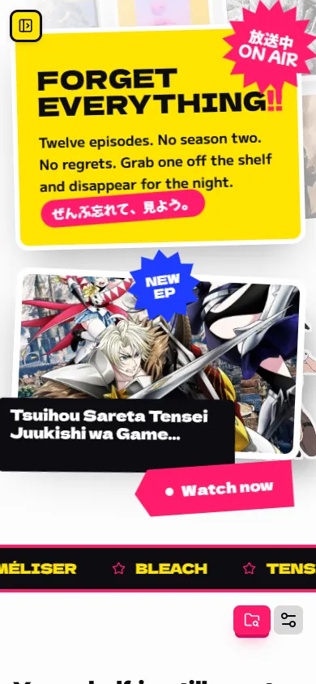

Press play first
Anime pages open on Watch online. A dead source? It hops to the next one.
A private anime and manga hub on your own computer. Stream, download, track. No ads, ever.
Anime pages open on Watch online. A dead source? It hops to the next one.

A download button on every episode, plus whole-season batches.

Rules grab new episodes the day they air.

Manga, manhwa and manhua in the reader, chapters saved for the train.




The demo video is being recorded.
One program on your computer. It opens in your browser, and nobody else's server is involved.
Download Read the full guideSHIORI MART
しおりマート
TOTAL¥0
shiori.exe --datadir "C:/Users/you/Shiori"
ありがとうございました
Shiori is free. Every ₹100 tip stamps one box. Fifteen stamps buys the domain, so these links never break.
Tips are voluntary gifts. They buy no access and are not refundable.
No. It hosts nothing. It runs on your computer and fetches from sources you choose to install.
No. You pick your own password for your own copy. AniList is optional.
The release is for Windows. macOS and Linux can build from source, and the docs show how.
It is built on Seanime by 5rahim and keeps its GPL-3.0 license.